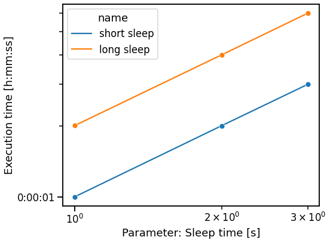
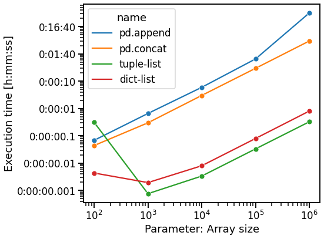
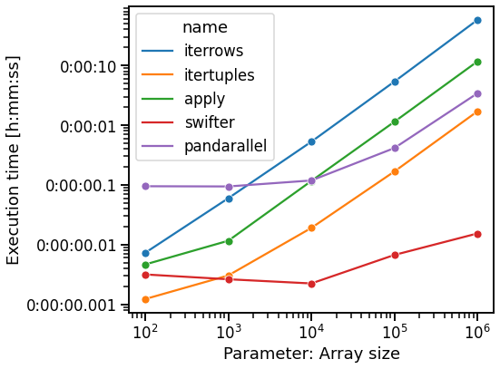
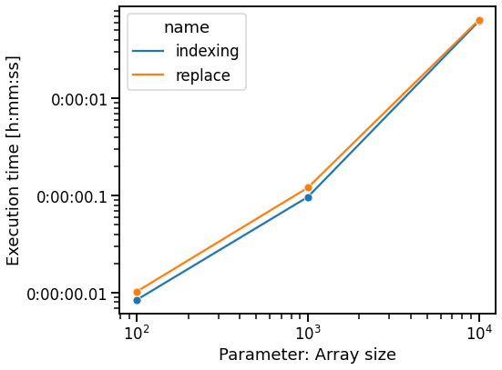

Benchmarking common operations¶
Helper class¶
This class will do the benchmark and summarizing visualization.
[1]:
import timeit
import datetime
import textwrap
import dataclasses
import numpy as np
import pandas as pd
import seaborn as sns
import matplotlib.pyplot as plt
from matplotlib.ticker import FuncFormatter, NullFormatter
from tabulate import tabulate
from tqdm.auto import tqdm
[2]:
sns.set_context('talk')
[3]:
@dataclasses.dataclass
class BenchmarkResult:
name: str
execution_time: float # [s]
parameter: float
class Benchmaker:
"""Light version of https://github.com/nschloe/perfplot."""
def __init__(
self,
setup,
snippets,
parameter_range=10 ** np.arange(2, 7),
parameter_name='Array size',
):
self.setup = setup
self.snippets = snippets
self.parameter_range = parameter_range
self.parameter_name = parameter_name
self.results = []
def _benchmark(self, code, setup, repeat_number, exec_number):
"""Return minimal execution time in seconds."""
timer = timeit.Timer(stmt=code, setup=setup)
exec_number = exec_number or timer.autorange()[0]
res = timer.repeat(repeat=repeat_number, number=exec_number)
perf = min(res)
return perf
def run(self, repeat_number=5, exec_number=None):
"""Run benchmark for each snippet for all parameters."""
if self.results:
raise RuntimeError('This benchmark has already been executed.')
for name, code in tqdm(self.snippets, desc='Snippets'):
for parameter in tqdm(self.parameter_range, desc='Parameters', leave=False):
code_fmt = textwrap.dedent(code.format(parameter=parameter))
setup_fmt = textwrap.dedent(self.setup.format(parameter=parameter))
perf = self._benchmark(
code_fmt,
setup_fmt,
repeat_number=repeat_number,
exec_number=exec_number,
)
self.results.append(BenchmarkResult(name, perf, parameter))
def print_results(self):
"""Format results as table."""
table = tabulate(
[dataclasses.astuple(b) for b in self.results],
headers=['Name', 'Execution Time [s]', 'Parameter'],
)
print(table)
def visualize(self):
"""Create plot summary."""
# prepare data
df = pd.DataFrame([dataclasses.asdict(b) for b in self.results])
# plot
fig, ax = plt.subplots(figsize=(8, 6))
sns.lineplot(data=df, x='parameter', y='execution_time', hue='name', marker='o')
ax.set_xlabel(f'Parameter: {self.parameter_name}')
ax.set_ylabel('Execution time [h:mm:ss]')
ax.set_xscale('log')
ax.set_yscale('log')
@FuncFormatter
def time_formatter(x, pos):
str_ = str(datetime.timedelta(seconds=x))
return str_.rstrip('0') if '.' in str_ else str_
ax.yaxis.set_minor_formatter(NullFormatter())
ax.yaxis.set_major_formatter(time_formatter)
fig.tight_layout()
Simple example¶
[4]:
setup = 'import time'
snippets = [
('short sleep', 'time.sleep({parameter})'),
('long sleep', 'time.sleep({parameter} * 2)'),
]
[5]:
bench = Benchmaker(
setup, snippets, parameter_range=[1, 2, 3], parameter_name='Sleep time [s]'
)
bench.run(repeat_number=1, exec_number=1)
bench.print_results()
Name Execution Time [s] Parameter
----------- -------------------- -----------
short sleep 1.00081 1
short sleep 2.00446 2
short sleep 3.00067 3
long sleep 2.00468 1
long sleep 4.00008 2
long sleep 6.00353 3
[6]:
bench.visualize()

Benchmarks¶
Assembling a dataframe¶
[7]:
setup = """
import pandas as pd
"""
snippets = [
(
'pd.append',
"""
df = pd.DataFrame()
for i in range({parameter}):
df = df.append(pd.DataFrame({{'i': [i]}}))
""",
),
(
'pd.concat',
"""
df_list = []
for i in range({parameter}):
df_list.append(pd.DataFrame({{'i': [i]}}))
df = pd.concat(df_list)
""",
),
(
'tuple-list',
"""
tuple_list = []
for i in range({parameter}):
tuple_list.append((i,))
df = pd.DataFrame(tuple_list, columns=['i'])
""",
),
(
'dict-list',
"""
dict_list = []
for i in range({parameter}):
dict_list.append({{
'i': i
}})
df = pd.DataFrame(dict_list)
""",
),
]
bench = Benchmaker(setup, snippets)
[8]:
bench.run(repeat_number=1, exec_number=1)
[9]:
bench.visualize()

Iterating over dataframe¶
[10]:
setup = """
import numpy as np
import pandas as pd
import swifter
from pandarallel import pandarallel
pandarallel.initialize(verbose=0)
df = pd.DataFrame(np.random.normal(size=({parameter}, 10)))
def work(x):
return x[0] ** 2 + x[9]
"""
snippets = [
(
'iterrows',
"""
for _, row in df.iterrows():
work(row)
""",
),
(
'itertuples',
"""
for row in df.itertuples():
work(row)
""",
),
(
'apply',
"""
df.apply(work, axis=1)
""",
),
(
'swifter',
"""
df.swifter.progress_bar(False).apply(work, axis=1)
""",
),
(
'pandarallel',
"""
df.parallel_apply(work, axis=1)
""",
),
]
bench = Benchmaker(setup, snippets)
[11]:
bench.run(repeat_number=1, exec_number=1)
[12]:
bench.visualize()

Setting values to NA¶
[13]:
setup = """
import numpy as np
import pandas as pd
df = pd.DataFrame(np.random.randint(5, 15, size=({parameter}, {parameter})))
"""
snippets = [
(
'indexing',
"""
df[df == 10] = pd.NA
""",
),
(
'replace',
"""
df.replace(10, pd.NA, inplace=True)
""",
),
]
bench = Benchmaker(setup, snippets, parameter_range=10 ** np.arange(2, 5))
[14]:
bench.run(repeat_number=1, exec_number=1)
[15]:
bench.visualize()
